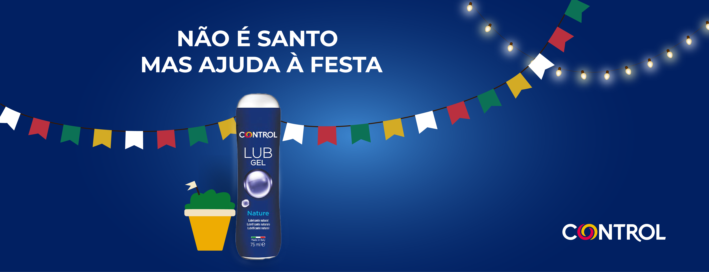

"Não é santo, mas ajuda à festa."
Headline Principal


Os Santos Populares são o auge do pecado lisboeta. Se Santo António é o casamenteiro oficial, a Control é a marca que garante que o "casamento" dura apenas uma noite — com a máxima segurança.
A estratégia passou por sequestrar a iconografia clássica das festas para criar uma narrativa de facilitação do prazer, dividida em fases de teaser e revelação.

Headline Principal